This workshop inverts the usual process. Instead of picking lanes and running methods to generate ideas, Brady walked in with six raw product seeds — things he's been thinking about — and we expanded each into 3-4 product variations using proven ideation methods. No blending across seeds. Each idea stands on its own. The result: 20 products spanning fashion, fermentation, family meals, nostalgic desserts, and Southern cuisine — the widest category spread of any workshop run to date.
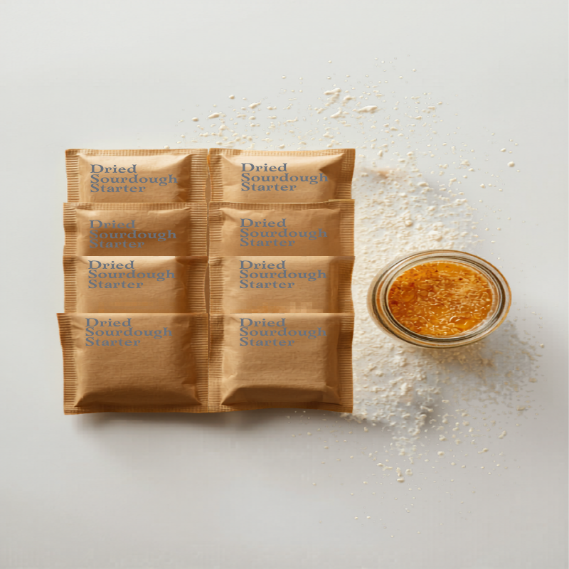
Single-use packets that eliminate the intimidation barrier. Add water, wait 24 hours, bake. The "sourdough for normal people" play.
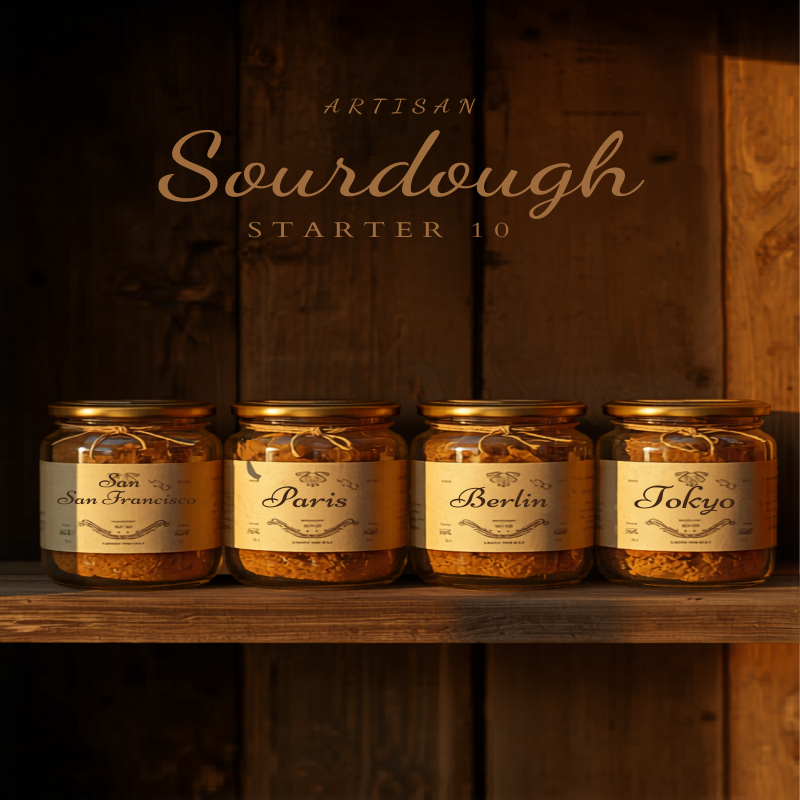
Heritage starter strains from legendary bakeries worldwide. Collectible, provenance-driven. Bake with a 150-year-old culture.
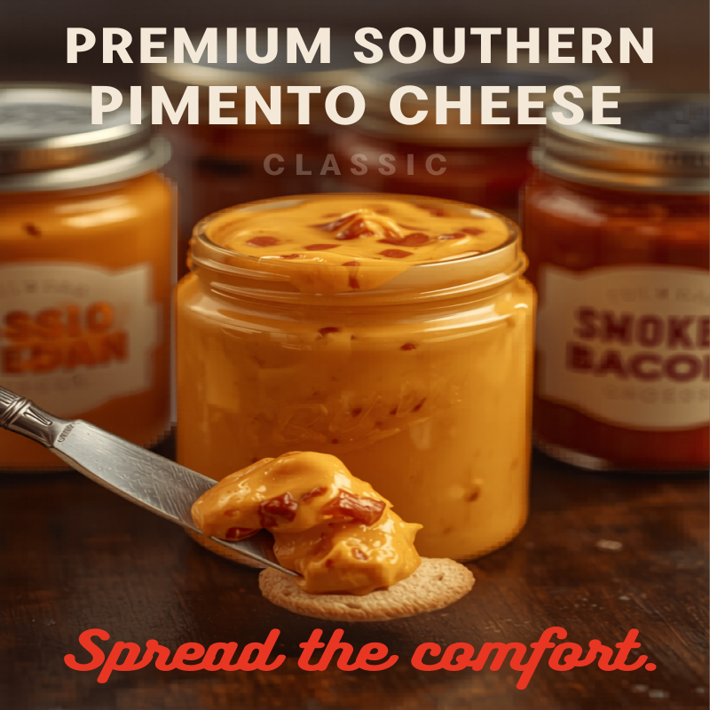
Premium refrigerated pimento cheese with real sharp cheddar. National distribution of a Southern regional staple. Four varieties.
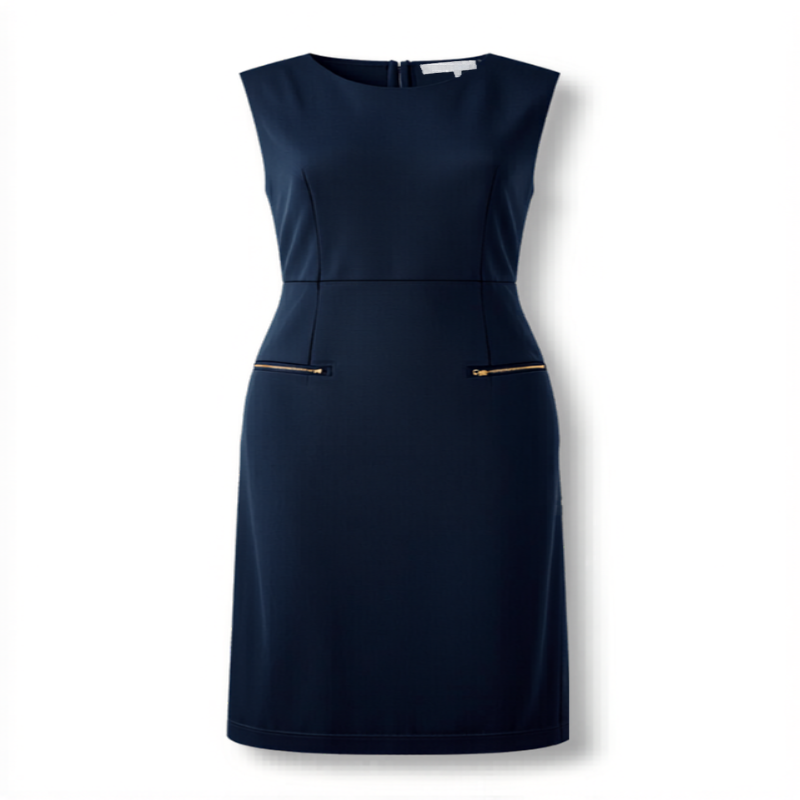
Sleek event-ready dress with 12+ invisible pockets. Fashion-forward solution to the "women's clothes have no pockets" problem.
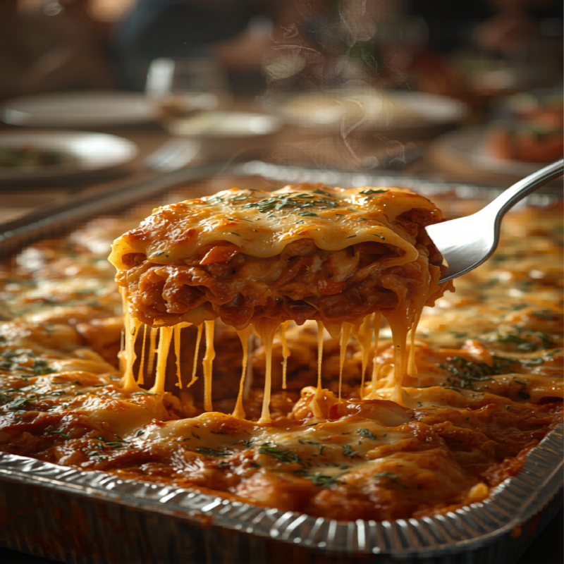
15-lb catering-pan lasagna. Stouffer's biggest is 5.6 lbs. This feeds 10-12 for $24.99. Finally, a "family size" that's actually family size.
Multiple ideas attack the same pattern: something that exists in premium/niche form but hasn't been made accessible. Sourdough starters, heritage grains, pimento cheese, Southern pantry staples — all regionally or culturally locked.
The winning move isn't inventing new food — it's putting existing food in new formats. Sachets, catering pans, snack crisps, cake mixes with real ingredients. Same product, new container, new occasion.
The fashion ideas aren't "fashion for fashion's sake." Women literally don't have pockets. Families literally can't find meals that feed 8+. These ideas solve real, daily friction points.
A sleek, event-ready women's dress with 12+ invisible pockets. Phone in the left panel. Keys in the right seam. Wallet in the interior lining. Lipstick in the concealed zip at the waist. From the outside, it looks like any other elegant midi dress — navy, structured, flattering. From the inside, it's an engineering project.
The job-to-be-done is dead simple: go out without a purse and still carry everything you need. Every woman who's ever shoved her phone into her waistband or asked her partner to hold her stuff understands this product instantly. The TikTok #pocketgate movement — where women compare the size of their jean pockets to men's — proves the frustration is real and viral.
Price it at $89-129 for the hero dress. Expand into blazers, jumpsuits, and joggers once the brand is established. This isn't tactical wear repackaged — it's fashion-first design that happens to solve a genuine daily problem.
PRETTYGARDEN / ANRABESS: Budget Amazon dresses ($18-28) with basic pockets. No fashion cachet. High volume, low margin.
Anatomie: Travel-focused women's clothing with hidden pockets. Premium ($150+) but positioned as travel/utility, not fashion.
Gap: No brand owns "fashionable pockets" as a core identity. The market has budget commodity (Amazon) and travel utility (Anatomie) but nothing in the fashion-forward middle.
Pocket engineering requires custom pattern-making — standard cut-and-sew won't work. Need a garment engineer who understands weight distribution (12 pockets with items creates sag if not engineered properly).
MOQ for custom patterns: 200-500 units per style. Fabric sourcing is standard. Can use existing fashion supply chain (Vietnam, Portugal) with custom specs.
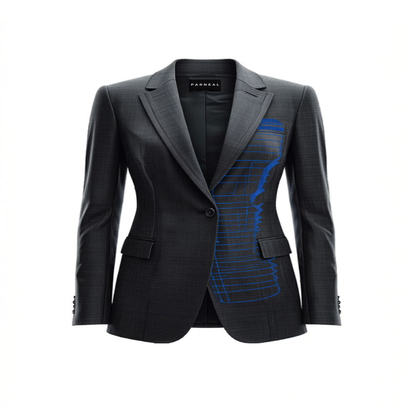
A tailored women's blazer in charcoal or navy with 14 internal pockets — phone, wallet, keys, lipstick, pen, glasses, business cards, earbuds, passport, and more. Every pocket is invisible from the outside. The blazer looks like any other sharp, well-cut professional piece.
The target is the professional woman who carries a bag because she has to, not because she wants to. Think: the commuter who juggles a laptop bag AND a purse. The conference attendee who needs hands free for handshakes but still needs her phone accessible. The traveler who wants her passport secure without a crossbody.
SCOTTeVEST: The OG multi-pocket brand. 20+ pockets in jackets. But it's ugly. Tech-bro aesthetic, not fashion.
Argent: Women's workwear brand. Quality tailoring but no pocket innovation.
Gap: Nobody combines serious tailoring with serious pocket engineering for women.
Same engineering challenge as the dress but blazer construction is more forgiving — structured shoulders and lining hide pocket bulk. Higher price point ($149-199) supports the engineering cost.
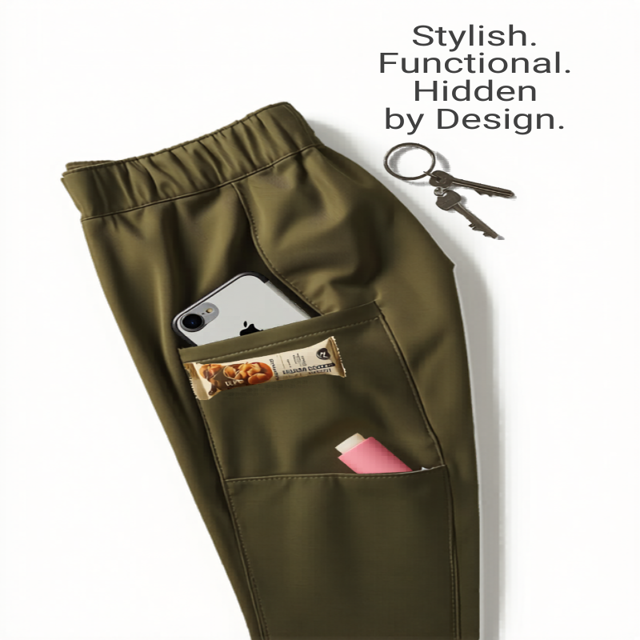
Athleisure joggers with 8 hidden pockets designed for the "mom carry" — phone, snack bar, wipes, keys, cards, lip balm, hair ties, and a pacifier. Looks like Lululemon. Works like cargo pants. Priced at $68-85.
Every mom at school pickup, the playground, or Target knows this frustration: you need both hands, you need ten things accessible, and you don't want to look like you're wearing tactical gear. These joggers solve the "diaper bag is too much but pockets aren't enough" gap. The olive green, black, and heather gray colorways are intentionally basic — these are everyday pants, not statement pieces.
Lululemon: Premium joggers, 2 pockets. No pocket innovation.
Athleta: Similar — quality fabric, basic pockets.
Amazon basics: Cheap joggers with cargo pockets. Not fashionable.
Gap: No one makes athleisure joggers specifically designed for the mom carry with hidden pocket engineering.
Jogger construction is simpler than tailored blazers. Stretch fabric forgives pocket bulk. Can co-pack with existing athleisure manufacturers. MOQ: 300-500 units.
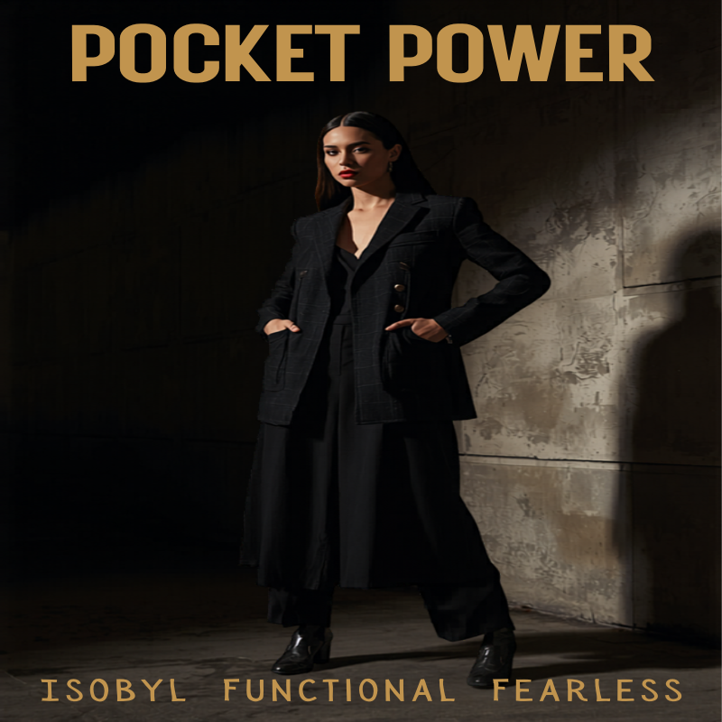
While the other pocket products hide their pockets, this one makes them the star. A capsule collection where pockets ARE the visible design element — gold zippers, structured pocket silhouettes, oversized utility flaps treated as fashion statements. This is the brand that turns #pocketgate from a complaint into a movement.
Think streetwear-meets-high-fashion. Four pieces per drop, released quarterly. Limited runs. The brand identity is built around the cultural frustration itself — every campaign is a direct callout of the pocket inequality. TikTok-native marketing, UGC-driven, zero traditional advertising budget.
No direct competitor. No fashion brand has built its entire identity around the pocket inequality narrative. This is pure whitespace — a brand built on a meme with real substance.
Small batch production (200-500 per drop). Higher per-unit cost but premium pricing ($120-200) supports it. Gold hardware sourcing adds complexity.
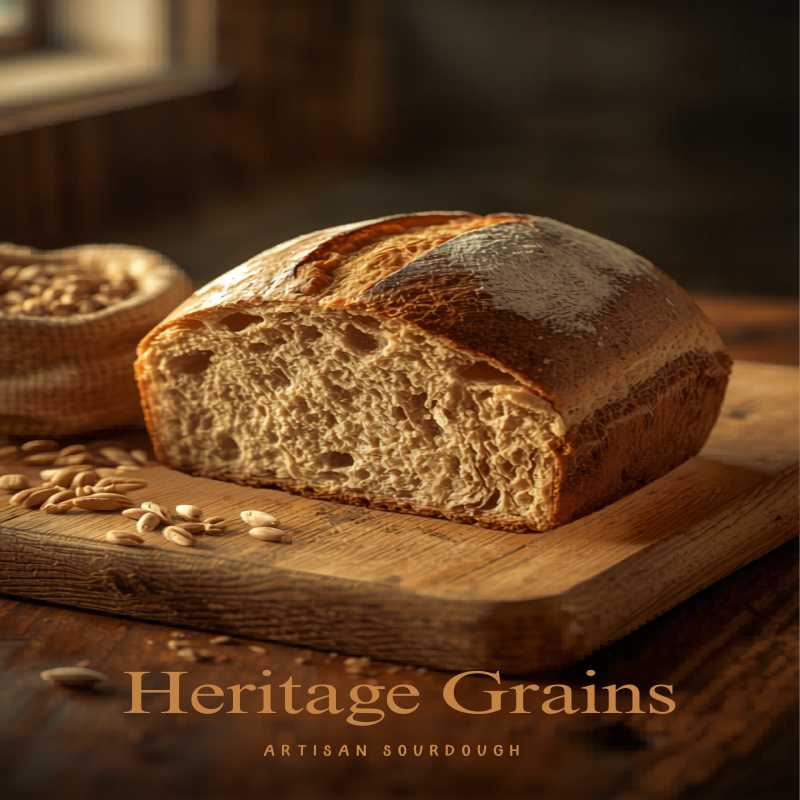
Single-origin, heritage grain sourdough with a provenance story on every loaf. Einkorn from an Oregon farm. Emmer from a Utah cooperative. Spelt from a Wisconsin mill. Each grain has a name, a place, and a story. Priced at $8-12 per loaf — well above commodity sourdough but justified by ingredient transparency and baking craft.
This is the "single-origin coffee" play applied to bread. The consumer who pays $6 for a pour-over will pay $10 for bread that tells them exactly where the grain came from, who grew it, and why that matters for flavor and nutrition. Heritage grains (einkorn, emmer, spelt) have lower gluten content and different protein structures that many people find more digestible.
Bread Alone / La Brea Bakery: Premium sourdough but no heritage grain focus or single-origin storytelling.
Jovial Foods: Einkorn products (pasta, flour) but no fresh bread.
Gap: No national brand combines heritage grains + sourdough fermentation + single-origin provenance in fresh bread.
Heritage grain supply is limited and seasonal. Requires farmer relationships and forward contracts. Long fermentation (24-48hr) limits throughput. Fresh bread has 3-5 day shelf life — regional distribution only unless par-baked/frozen.
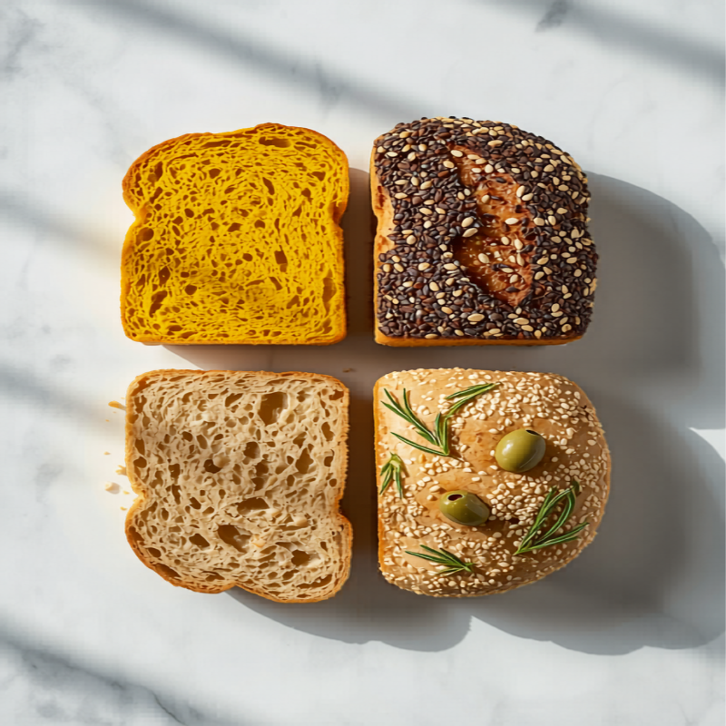
Sourdough as a health platform. Four SKUs, each combining long-fermentation sourdough with a functional ingredient cluster: Turmeric & Black Pepper (anti-inflammatory), Everything Bagel (familiar flavor, gut health benefits), Seeds & Ancient Grains (protein, fiber, omega-3s), and Olive & Rosemary (Mediterranean diet play).
Sourdough already has a natural health halo — 58% of consumers believe it's healthier than regular bread. This line leans into that perception with actual functional ingredients, not just the fermentation story. The packaging makes the health claim explicit: "Fermented for your gut." Each loaf lists the fermentation time (24+ hours) and the specific health benefits of each ingredient addition.
Dave's Killer Bread: Health-positioned bread but no sourdough, no functional ingredients.
Ezekiel / Food for Life: Sprouted grains, health focus, but no sourdough fermentation story.
Gap: No brand combines sourdough + functional ingredients + explicit gut-health positioning.
Functional ingredient additions are straightforward — turmeric, seeds, olives are standard bakery ingredients. The complexity is in the sourdough fermentation itself (24-48 hr cycles). Co-pack with an existing artisan bakery that has fermentation capacity.
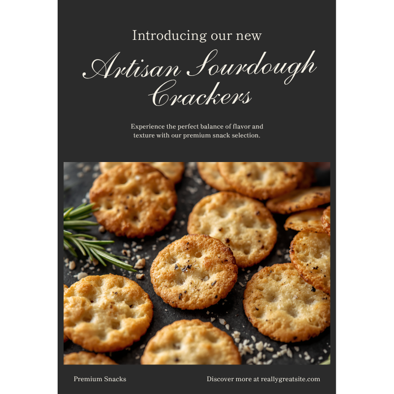
Sourdough crackers, chips, and crisps using fermented dough as the base. Three varieties: Rosemary Sea Salt, Everything Seasoning, and Aged Parmesan. The selling point: "Made with 24-hour fermented sourdough" — transferring the health halo of sourdough bread into the snack aisle.
This is the shelf-stable play. Fresh sourdough bread has a 3-5 day shelf life and regional distribution limits. Crackers and crisps have 12+ month shelf life and national distribution potential. Same sourdough story, different format, massively larger addressable market.
Rustic Bakery: Premium sourdough flatbreads/crackers. Small, regional. $6-8/bag.
Simple Mills / Mary's Gone Crackers: Health-positioned crackers but no sourdough story.
Gap: No national cracker brand leads with "sourdough fermented" as the primary positioning.
Cracker/crisp production is well-established. The sourdough step adds fermentation time but can be batch-processed. Co-pack with existing cracker manufacturers. Long shelf life = national distribution.
Single-use packets of dehydrated sourdough starter. Add water, wait 24 hours, bake. No feeding schedule. No discard. No 7-day activation ritual. No naming your starter and treating it like a pet. Just bread.
The barrier to sourdough baking isn't skill — it's maintenance. Millions of people tried sourdough during COVID, made a few loaves, then let their starter die because feeding it every day felt like a chore. These sachets eliminate the chore entirely. Each packet is a single use — you open it, hydrate it, bake with it, and when you want to bake again, you open a new one. Pack of 4 for $12.99. The yeast packet model applied to sourdough.
KozyKraft: $5-8 packets on Amazon. Craft positioning, minimal branding. Single SKU.
Cultures for Health: Live and dehydrated cultures. Homebrew/fermentation brand, not bakery-focused.
King Arthur Baking: Sells sourdough starter (live, $8.95 jar). But it's a live culture that needs maintenance — doesn't solve the convenience problem.
Gap: No brand positions dry sourdough starter as "yeast packets for sourdough" with mass-market branding and grocery distribution.
Dehydrating sourdough culture is well-understood. Shelf-stable for 12+ months. Packet filling is standard food co-pack. The product is literally dried bacteria + flour in a foil packet. Low COGS, high margin ($12.99 for ~$1.50 of product).
Heritage sourdough starter cultures sourced from legendary bakeries around the world, dried and sealed in collectible glass jars with wax seals. San Francisco, 1849. Paris, 1902. Berlin, 1923. Tokyo, 1951. Each culture produces bread with a distinct flavor profile based on its unique microbial community — the terroir of bread.
This is the single-malt Scotch play applied to sourdough. The story IS the product. A 150-year-old culture from a San Francisco bakery that survived the 1906 earthquake. A Parisian culture passed down through four generations of boulangerie. The glass jar with the wax seal sits on your counter like a bottle of good wine. $18-24 per culture. Gift-worthy, collectible, shareable.
No direct competitor. Nobody packages heritage bakery cultures as collectible, provenance-driven products. Cultures for Health sells generic cultures. This is the antithesis of generic.
Sourcing cultures from famous bakeries requires relationships and licensing. Some bakeries guard their cultures closely. Dehydration and packaging is simple. Glass jars + wax seals add packaging cost but support premium pricing.
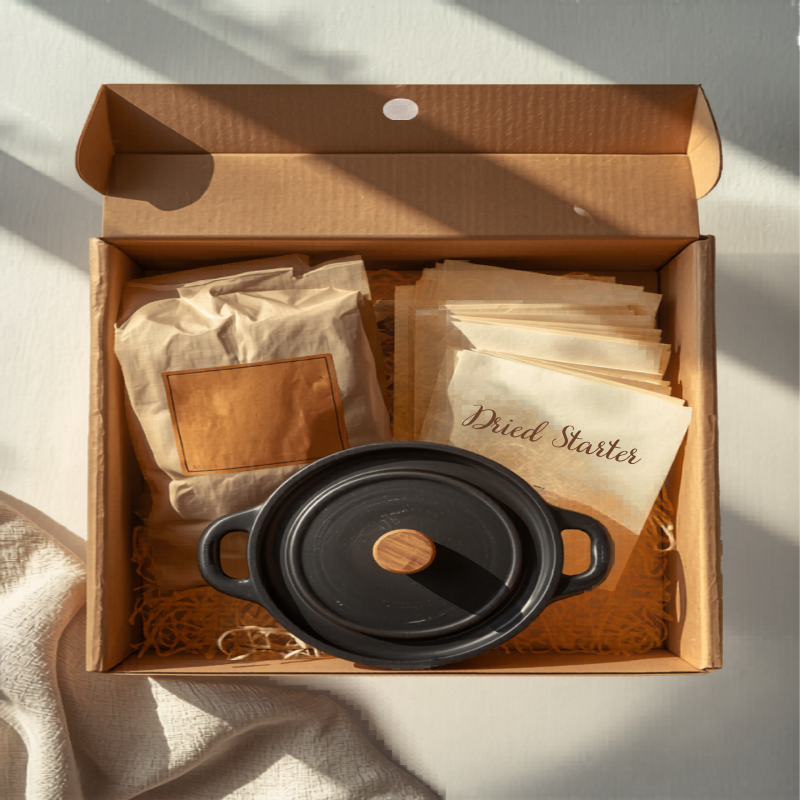
The complete "first loaf" experience in a box: dried sourdough starter, heritage flour (2 lb bag), recipe cards with step-by-step photos, parchment rounds, a bench scraper, and a scoring lame. Everything a beginner needs to bake their first sourdough loaf — no prior experience required. $39.99.
This is a gift product. It's what you buy for the person who says "I've always wanted to try sourdough." The unboxing is intentionally beautiful — kraft paper, hand-stamped elements, a recipe booklet that feels like a keepsake. It competes with candle kits, cocktail kits, and cooking class gift cards in the "experiential gift" category.
Amazon sellers: Multiple sourdough starter kits at $15-25. Poor packaging, basic contents, no brand identity.
King Arthur Baking: Sells individual components but no curated kit experience.
Gap: No premium, gift-worthy sourdough starter kit with beautiful packaging and complete contents.
Assembly-style co-pack. All components are readily available. Custom box and booklet printing adds upfront cost but per-unit cost is manageable at $39.99 retail (est. COGS $12-15).
A 15-pound lasagna in a full-size aluminum catering pan. Feeds 10-12 people. $24.99. The biggest frozen lasagna Stouffer's makes is 5.6 lbs and they call it "Party Size." This is almost three times that. Because some families actually need to feed eight people dinner, and they shouldn't have to buy three boxes to do it.
The format is the innovation. Restaurant supply companies already make catering-pan meals at this scale — this just brings the format to retail. Same aluminum pan you'd get from a catering company, same generous portions, but in the freezer aisle at Walmart for $25. Cost per serving: ~$2.50. That's cheaper than Stouffer's on a per-serving basis AND you don't have to heat up three separate trays.
Stouffer's Party Size: 90 oz (5.6 lbs), ~$14.99, ~11 servings. The current ceiling.
Amy's Kitchen Family Size: 3-4 servings. Not really "family" for larger families.
Costco/Sam's Club: Sell catering-pan meals in deli but not in frozen aisle. Limited selection.
Gap: No frozen brand goes above 6 lbs. The 10-15 lb format is completely unoccupied.
Catering-pan production is standard foodservice manufacturing. The challenge is freezer-aisle real estate — a 15-lb tray needs significant shelf space. Retail buyers need convincing. Target Costco/Sam's Club first (they have the freezer space), then expand to Walmart.
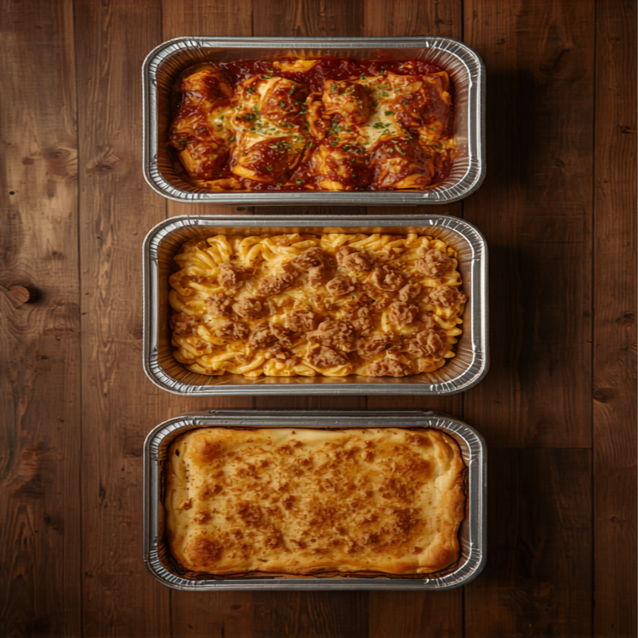
If the 15-lb lasagna works, this is the full product line: catering-pan enchiladas, mac & cheese, pot pie, shepherd's pie. All 10-15 lbs. All under $30. The brand name — "Sunday Supper" — evokes the occasion: the big family meal where everyone sits down together. Not Tuesday night leftovers. Not microwave singles. The Sunday table.
Five SKUs at launch, rotating seasonal specials (green bean casserole at Thanksgiving, King Ranch chicken in spring). Each tray is designed for the oven — 90 minutes at 350, foil on for the first hour, foil off for the last 30 to brown. Simple enough that a teenager can manage it.
Stouffer's: Has party size in lasagna and mac & cheese but maxes out at 5-6 lbs.
Marie Callender's: Family portions but standard sizes (24-32 oz).
Gap: No frozen brand offers a RANGE of 10-15 lb catering-pan comfort meals.
Multiple SKUs increase complexity but share the same production format (catering pans). Enchiladas and mac & cheese use similar assembly lines. Cold chain logistics for frozen are well-established.
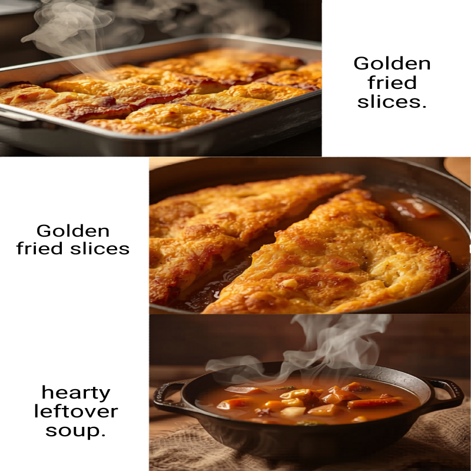
15-lb meals designed with an intentional leftover strategy. The packaging includes three recipes: Day 1 is the main event (lasagna from the pan). Day 2 is the transformation (slice and pan-fry for crispy edges with a fried egg on top). Day 3 is the reinvention (chop leftovers into a soup or stew base). One purchase, three distinct meals, zero food waste.
This isn't just big-format meals — it's big-format meals with a meal-planning system built in. The recipes are printed directly on the packaging in large, clear type. QR code links to video tutorials. This product is designed for the parent who meal-plans on Sunday and doesn't want to cook from scratch every night.
No direct competitor. Meal kit brands (HelloFresh, Blue Apron) sell single-meal kits. No frozen brand designs meals with intentional leftover recipes.
Same production as the REAL Family Lasagna. The only addition is recipe content on the packaging and a QR code to video content. Recipe development and video production are one-time costs.
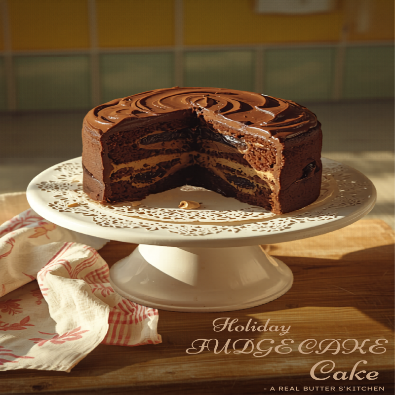
A premium, retro-branded fudge ripple cake made with real butter, real fudge, and no shortening. Two layers of moist yellow cake with thick ribbons of dark fudge swirled through the batter, topped with a fudge glaze. $12.99 at the grocery bakery counter. Vintage-inspired packaging with a cream-colored box and script typography.
This is not an "elevated" dessert. It's not a Chef's Table creation. It's the cake your grandmother actually made — rich, heavy, unapologetically sweet — but made with ingredients that matter. Real butter instead of margarine. Real chocolate fudge instead of corn syrup. The nostalgia isn't a marketing gimmick — it's the product specification.
Grocery bakery cakes: Most use shortening, artificial flavors, and corn-syrup based fudge. Low quality, low price ($6-9).
Nothing Bundt Cakes: Premium bakery chain. $25+ per cake. Limited flavors.
Gap: No grocery bakery offers a premium fudge ripple cake with real ingredients at the $12.99 price point.
Standard bakery production. Real ingredients increase COGS slightly but $12.99 price point supports it. Can co-pack with regional bakeries or license to grocery in-store bakeries. No cold chain — ambient shelf life 5-7 days.
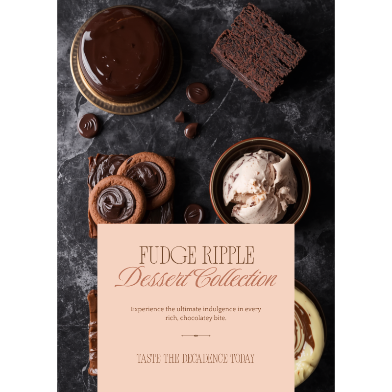
A dessert sub-brand built entirely around the fudge ripple concept: cake, brownies, ice cream, cookies, cheesecake, and coffee cake — all featuring the signature dark fudge swirl. The unifying visual is the ripple pattern. Every product, every package, every social media post features that distinctive marble of dark fudge through light batter.
This is the Ben & Jerry's approach: take one concept and maximize it across formats. The fudge ripple isn't a flavor — it's a brand identity. The visual alone is iconic and instantly recognizable in a crowded dessert aisle.
No direct competitor. No brand has built an entire product ecosystem around the fudge ripple concept. Individual fudge ripple products exist (ice cream) but no cross-category brand.
Multi-category production requires multiple co-packers (bakery, ice cream, cookie). Brand management across 6+ SKUs is operationally heavy. Recommend starting with 2-3 core products and expanding.
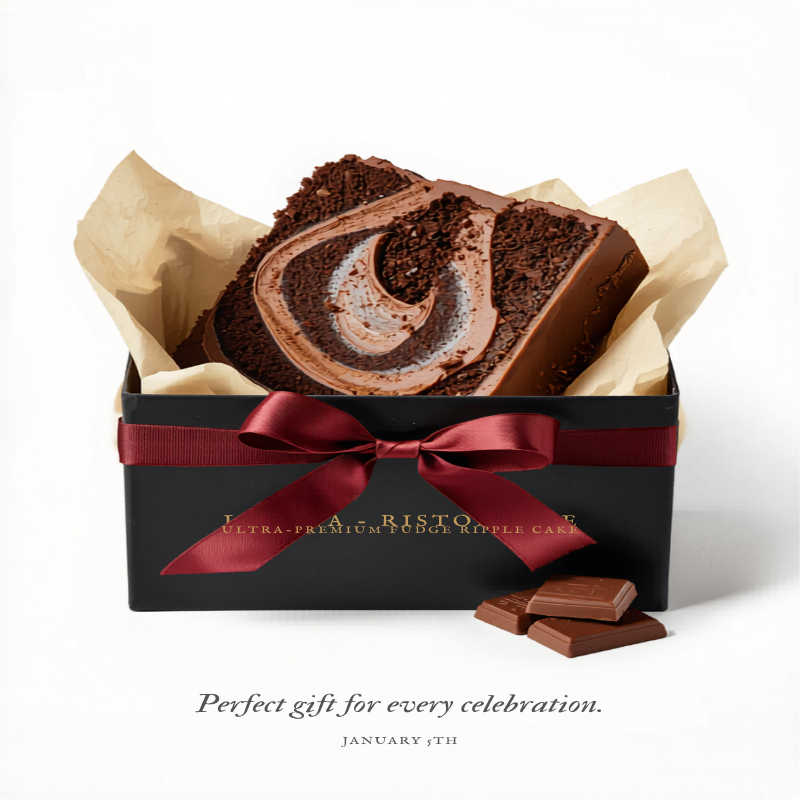
Ultra-premium, gift-worthy fudge ripple cake. Belgian Callebaut chocolate. French Normandy butter. Madagascar Bourbon vanilla. Three layers instead of two. Ships nationwide in a magnetic-close gift box with gold foil accents. $40 including shipping. This is the birthday cake you order for someone you actually care about.
The DTC celebration cake market is dominated by generic buttercream towers and overpriced fondant nightmares. This occupies the "thoughtful gift" position — the same slot as a box of fancy chocolates or a bottle of good wine, but more personal because it's cake. The $40 price point is intentional: expensive enough to feel special, cheap enough to not feel crazy.
Milk Bar: Ships cakes nationwide, $44-58. Trendy, Instagram-forward. No nostalgic positioning.
Goldbelly: Marketplace for regional bakeries. Prices $40-100+. No fudge ripple specialists.
Gap: No DTC cake brand specializes in nostalgic American desserts with premium ingredients.
Shipping perishable cakes requires cold-pack or frozen-ship logistics. 2-day shipping adds cost. Premium packaging (magnetic box, gold foil) adds $5-8 per unit. Target margin: 45-55% after shipping.
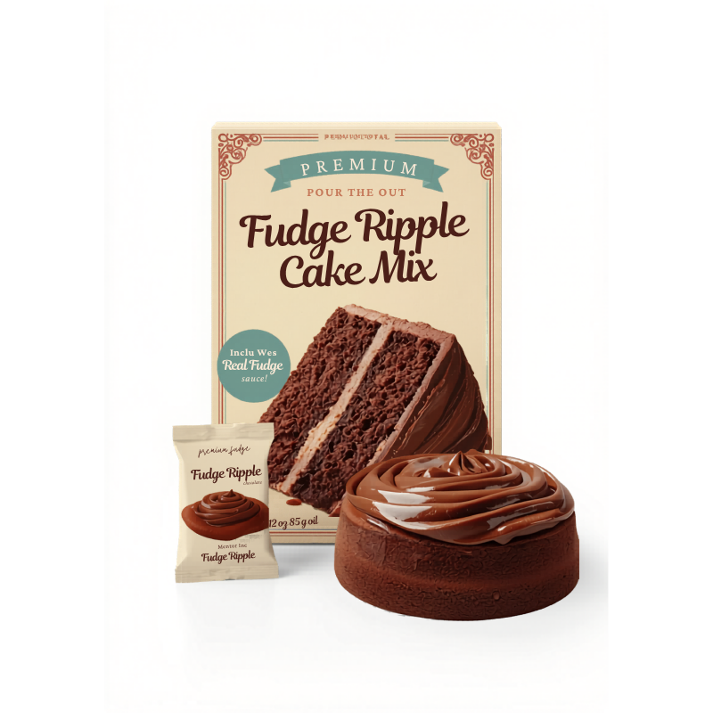
A shelf-stable cake mix that produces an actual bakery-quality fudge ripple cake. The key differentiator: inside the box, there's a separate foil packet of REAL fudge sauce — not powder, not flavoring, real fudge. You bake the cake, pour the fudge over the batter before it sets, drag a knife through it for the ripple, and bake. The result looks and tastes like it came from a bakery. $6.99.
Every cake mix on the market is a powder. This one includes a wet component (the fudge packet) that makes the finished product dramatically better. It's the kind of "one weird trick" that spreads on TikTok: "this $7 cake mix has a REAL fudge packet inside and the cake looks like this." The viral potential is enormous.
Duncan Hines / Betty Crocker: All-powder mixes. No wet components. $3.99-4.99.
Ghirardelli Brownie Mix: Includes a chocolate syrup packet — the closest analog. Premium-positioned, $5.49.
Gap: No cake mix includes a real fudge packet. The Ghirardelli brownie model proves the "included sauce" format works.
Standard cake mix production + separate fudge sauce packet. Both are common food manufacturing processes. Co-pack with existing cake mix or confectionery manufacturer. Shelf-stable for 12+ months.
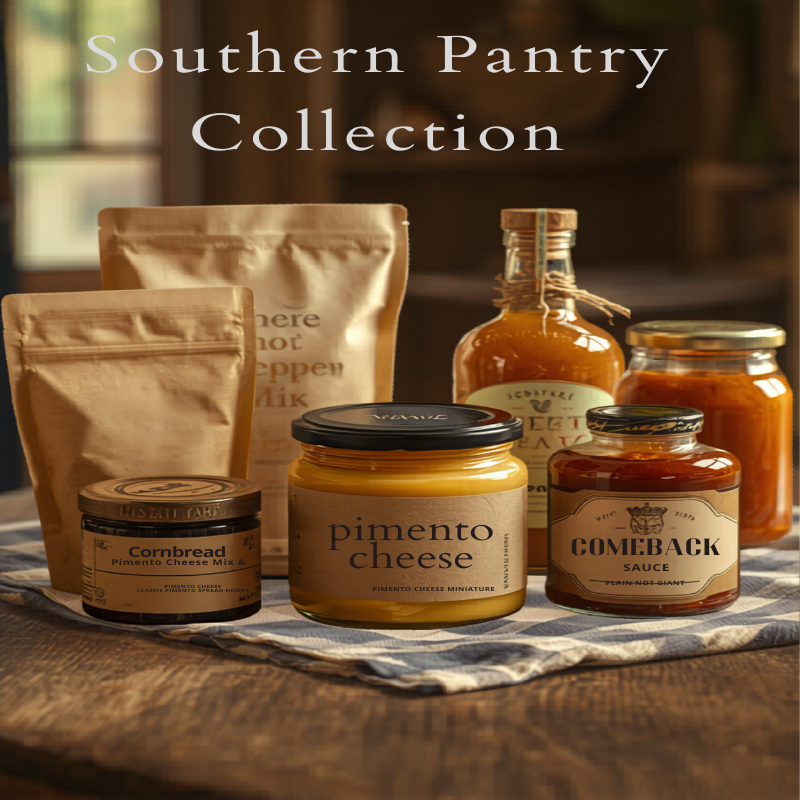
A complete CPG line of Southern pantry staples with cohesive branding: cornbread mix, pimento cheese, sweet tea concentrate, hot honey, biscuit mix, pepper jelly, and comeback sauce. Seven products that form the "starter kit" for Southern cooking. For the person in Denver who ate shrimp and grits in Charleston and wants to recreate it at home.
The power is in the ecosystem, not any single product. Any one of these exists somewhere — but nobody has packaged them as a cohesive collection with consistent quality, consistent branding, and the cross-merchandising story of "if you liked the cornbread mix, you need the pepper jelly." The end-cap opportunity is massive: "Your Southern Pantry" as a branded grocery destination within the store.
Individual brands exist: Mike's Hot Honey (hot honey), Papa's (pimento cheese), Martha White (cornbread mix). But they're separate brands with no ecosystem play.
Stonewall Kitchen: Regional food brand with broad product line — but New England focused, not Southern.
Gap: No cohesive, cross-merchandised "Southern Pantry" brand exists. Each category is siloed.
Seven SKUs across different food categories (dry mix, refrigerated, shelf-stable liquid, condiment). Requires 3-4 different co-packers. Supply chain management and brand consistency across categories is the real challenge. Recommend starting with 3 shelf-stable products and expanding.
Premium, refrigerated pimento cheese made with real sharp cheddar, real pimentos, and Duke's mayonnaise. Four varieties: Classic, Jalapeño, Smoked, and Bacon. Distributed nationally through KeHE or UNFI. Priced at $6.99 for 12 oz — premium but not absurd.
Pimento cheese is the "caviar of the South" — beloved regionally, unknown nationally. Papa's Pimento Cheese is expanding but still covers only 8 states. The opportunity is national distribution with a craft positioning: small-batch look, real ingredient story, four-flavor variety that gives retailers a reason to merchandize a full shelf set. Put it next to the hummus and watch what happens.
Papa's Pimento Cheese: Growing fast, KeHE distribution, but only in 8 Southern states. Flavors: Original, Jalapeño, Fiesta, Smokehouse.
Palmetto Cheese: The original national pimento cheese. Available at Costco and Walmart in select regions.
Gap: National premium pimento cheese with craft positioning (like Sabra did for hummus) doesn't exist yet. The category is where hummus was in 2005.
Pimento cheese is a simple cold-mix product: shredded cheese, mayo, pimentos, seasonings. No cooking required. Refrigerated shelf life 45-60 days. Can co-pack with any deli/cheese manufacturer. Low COGS, high margin.
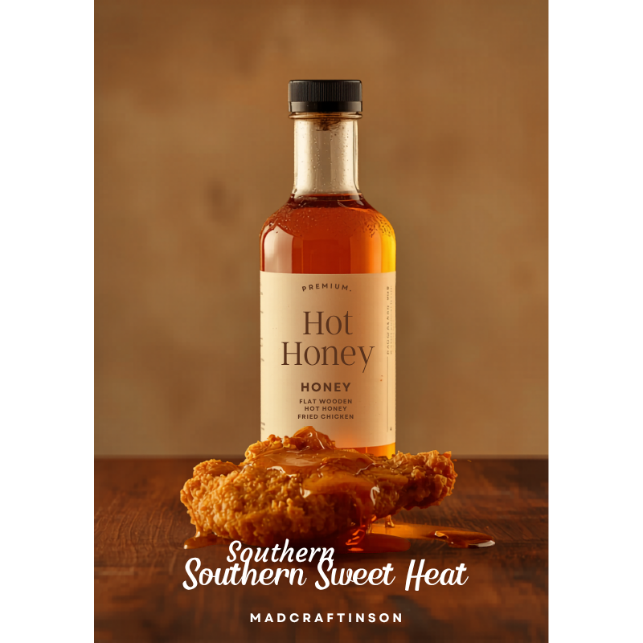
A single-product hot honey brand with deep Southern provenance. Small-batch, craft-positioned, with a specific origin story: honey from a specific apiary, peppers from a specific farm, blended in a specific place. Not "artisan" as a marketing buzzword — artisan as a supply chain fact. $9.99 for 12 oz.
Mike's Hot Honey proved the category. They went from a Brooklyn pizza shop to ubiquity. But Mike's is a Brooklyn brand. This is a Southern brand — hot honey from the South, where hot honey actually comes from. The positioning is authenticity over trendiness. "We didn't discover hot honey. We've been putting it on biscuits for generations."
Mike's Hot Honey: Category creator. Brooklyn origin. Widely available at $8-10. The benchmark.
Bees Knees Spicy Honey: Smaller competitor. Similar positioning.
Store brands: Walmart, Trader Joe's have introduced private-label hot honey at $5-6.
Gap: No hot honey brand leads with Southern provenance and authenticity as the differentiator.
Hot honey is honey + chili peppers + vinegar. Simple cold-blend or infusion process. Can source from Southern apiaries and co-pack locally. Shelf-stable for 12+ months. Extremely simple supply chain.
Unlike Runs 1-2 (method-first, where ideation methods generate ideas), Run 3 inverts the process: Brady provided 6 raw product seeds, and we expanded each using 2-3 proven methods from the full-stack-ideation toolkit. Methods were selected based on cumulative hit rates from prior runs:
| Method | Cumulative Hit Rate | Ideas Generated (Run 3) |
|---|---|---|
| #4 JTBD | 87.5% | 7 |
| #21 SCAMPER | 100% | 5 |
| #56 Premiumization | 83.3% | 5 |
| #58 Packaging Innovation | 83.3% | 5 |
| #51 Cultural Trend Mining | 83.3% | 3 |
| Category | Market Size | Growth | Key Signal |
|---|---|---|---|
| U.S. Women's Clothing | $190B+ | 5.2% CAGR | Functional fashion fastest subsegment |
| Global Sourdough | $5.9B (2025) | 6.8-9.9% CAGR | 58% believe sourdough is healthier |
| U.S. Frozen Meals | $89.2B (2026) | 4.2% CAGR | Family-size packaging emerging trend |
| Nostalgic Baking | $150M growth (2025) | Accelerating | Cream-filled dessert searches +51% |
| U.S. Sauces/Condiments | $37B+ (2026) | 5.9% CAGR | Hot honey on 11% menus, projected 26% |
| U.S. Cheese (specialty) | $61.6B (2026) | 4.1% CAGR | Regional-to-national expansion accelerating |
Seed-first ideation produces more focused output. When Brady arrives with a formed idea, the expansion methods sharpen rather than scatter. The 83% survival rate is the highest across all 3 runs.
First non-food run proves the methods transfer. JTBD and Cultural Trend Mining produced the strongest fashion ideas — the same methods that dominate in food. The toolkit is category-agnostic.
Format innovation remains the most reliable pattern. Sachets (sourdough starters), catering pans (family meals), cake mixes with real fudge packets — same product, new container, new occasion. Packaging Innovation (#58) maintains strong hit rates across all 3 runs.
The "accessibility gap" is a repeatable thesis. Multiple top ideas follow the same structure: take something that exists in premium/niche/regional form and make it accessible to mainstream consumers. This pattern appeared independently across 4 of 6 seeds.
Stream-of-consciousness input works. Brady's unfiltered seed list produced ideas that feel more authentic and personally motivated than lane-selected, method-generated concepts. The emotional connection to the seed (he's a dad of five who needs pockets and lasagna) gives the pitches genuine energy.